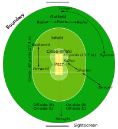

In cricket, the rules of the game are specified in a code called The Laws of Cricket (hereinafter called "the Laws") which has a global remit. There are 42 Laws (always written with a capital "L"). The earliest known version of the code was drafted in 1744 and, since 1788, it has been owned and maintained by its custodian, the Marylebone cricket Club (MCC) in London.
Playing Area

Cricket is a bat-and-ball game played on a cricket field (see image of
cricket pitch and creases) between two teams of eleven players each.
The field is usually circular or oval in shape and the edge of the playing
area is marked by a boundary, which may be a fence, part of the stands, a rope,
a painted line or a combination of these; the boundary must if possible be marked
along its entire length.
In the approximate centre of the field is a rectangular pitch (see image, below) on
which a wooden target called a wicket is sited at each end; the wickets are placed 22
yards (20 m) apart.[66] The pitch is a flat surface 10 feet (3.0 m) wide, with very short
grass that tends to be worn away as the game progresses (cricket can also be played on artificial
surfaces, notably matting). Each wicket is made of three wooden stumps topped by two bails.